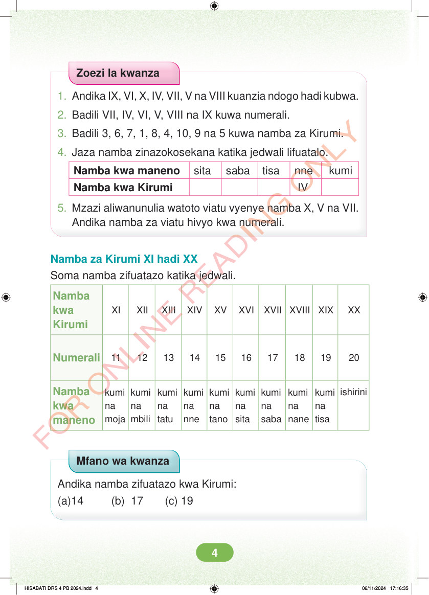

Zoezi la kwanza 1. Andika IX, VI, X, IV, VII, V na VIII kuanzia ndogo hadi kubwa. 2. Badili VII, IV, VI, V, VIII na IX kuwa numerali. 3. Badili 3, 6, 7, 1, 8, 4, 10, 9 na 5 kuwa namba za Kirumi. 4. Jaza namba zinazokosekana katika jedwali lifuatalo. Namba kwa maneno sita saba tisa nne kumi Namba kwa Kirumi IV 5. Mzazi aliwanunulia watoto viatu vyenye namba X, V na VII. Andika namba za viatu hivyo kwa numerali. Namba za Kirumi XI hadi XX Soma namba zifuatazo katika jedwali. XI XII XIII XIV XV XVI XVII XVIII XIX XX Namba kwa Kirumi Numerali 11 12 13 14 15 16 17 18 19 20 ishirini kumi na moja kumi na mbili kumi na tatu kumi na nne kumi na tano kumi na sita kumi na saba kumi na nane kumi na tisa Namba kwa maneno Mfano wa kwanza Andika namba zifuatazo kwa Kirumi: (a)14 (b) 17 (c) 19 HISABATI DRS 4 PB 2024.indd 4 HISABATI DRS 4 PB 2024.indd 4 06/11/2024 17:16:35 06/11/2024 17:16:35